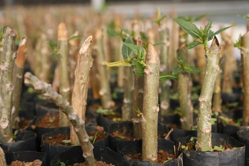
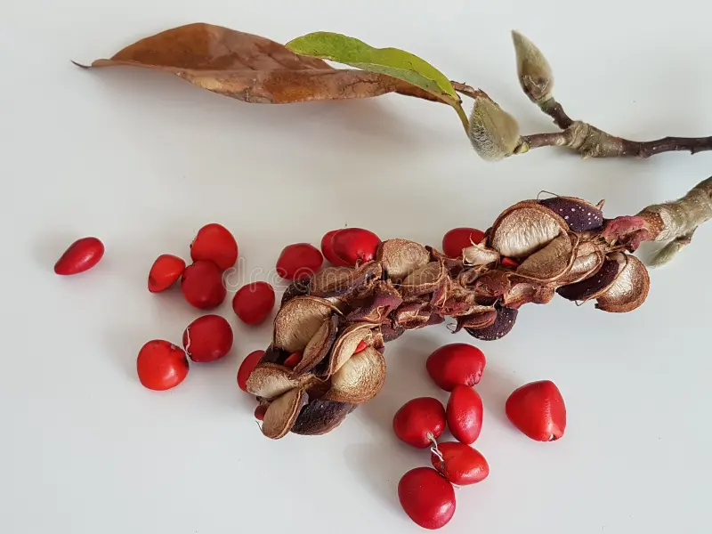

Magnólia
Reprodução
Estaquia:
Estacas retiradas de brotos, depois de certa preparação utilizando hormônio para enraizamento, são plantadas em substrato. Após algumas semanas, a raíz já estará desenvolvida e pronta para ser replantada em outro lugar.
Alporquia:
um pequeno corte é feito em um broto, sem separá-lo da planta-mãe, onde é colocado hormônio enraizador e envolto com musgo, que deve ser mantido úmido e coberto com plástico. Após algumas semanas, a raíz ficará visível através do musgo, e então o broto poderá ser cortado e plantado.
Sementes:
Após serem coletadas e limpas, devem ser mantidas em refrigeração por 3 meses. Depois que a casca estoura, já podem ser retiradas da geladeira e plantadas no solo.

